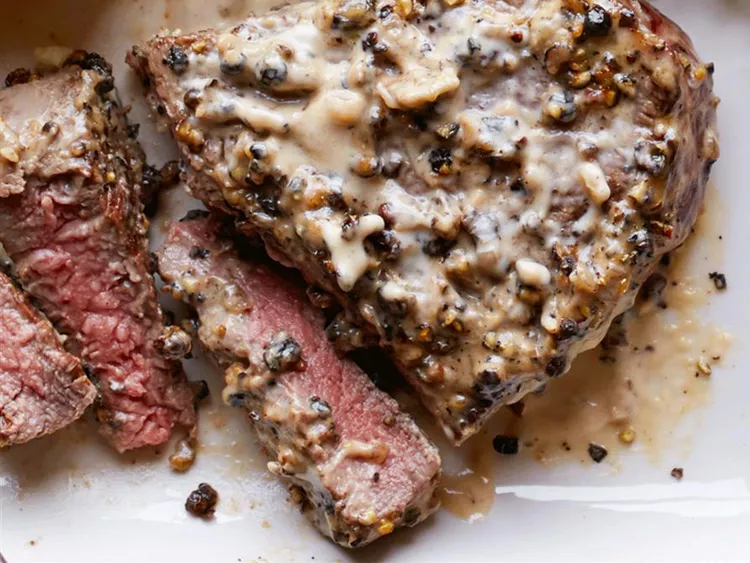

Filet Mignons With Pepper Cream Sauce

These luscious steaks' peppery bite is tamed with a velvety cream sauce.
- Ingredients:
-
- 1/4 cup coarsely crushed black peppercorns
- 4 (6 ounce) 1 1/2 inch thick filet mignon steaks
- salt to taste
- 1 tablespoon butter
- 1 teaspoon olive oil
- 1/3 cup beef broth
- 1 cup heavy cream
- Directions:
-
- Place the peppercorns into a shallow bowl. Sprinkle the beef tenderloin filets with salt on both sides, and coat both sides with crushed peppercorns.
- Melt the butter with the olive oil over high heat in a heavy skillet (not nonstick) until the foam disappears from the butter. Gently place the steaks in the pan, and cook until they start to become firm and are reddish-pink and juicy in the center, about 3 1/2 minutes per side. An instant-read thermometer inserted into the center should read 130 degrees F (54 degrees C). Remove the steaks to platter, and cover tightly with foil.
- Pour the beef broth into the skillet, and use a whisk to stir the broth and scrape up any dissolved brown flavor bits from the skillet. Whisk in the cream, and simmer the sauce until it's reduced and thickened, 6 to 7 minutes. Place the steaks back in the skillet, turn to coat with sauce, and serve with the remaining sauce.